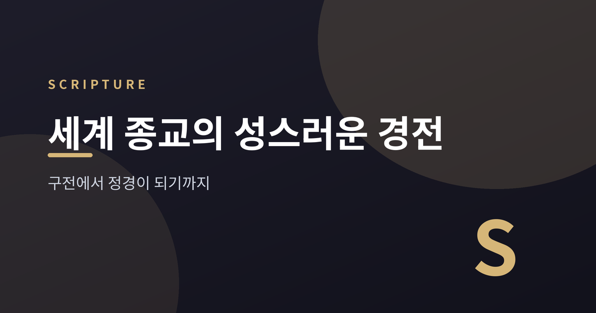
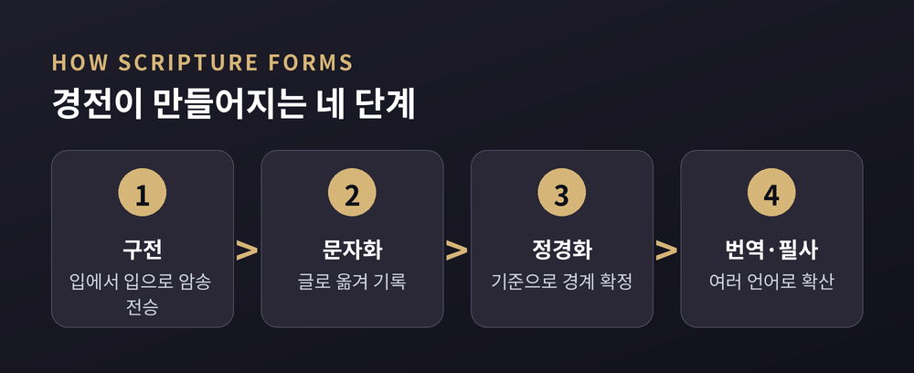
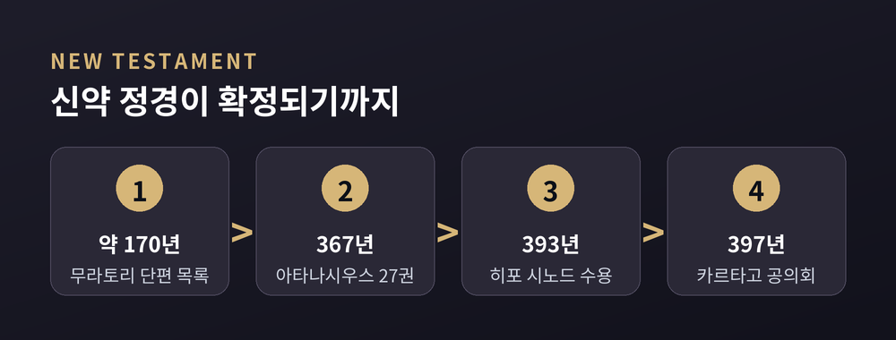
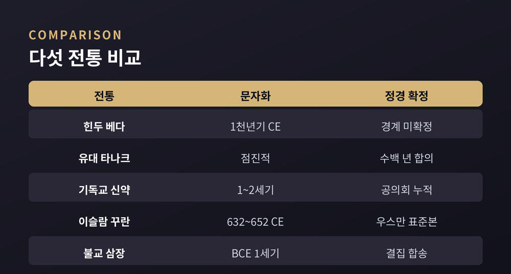

3줄 요약
· 세계의 주요 경전은 대부분 문자가 아니라 '입에서 입으로' 전해지는 구전에서 시작했습니다.
· 힌두교 베다, 유대교 타나크, 기독교 신약, 이슬람 꾸란, 불교 삼장은 저마다 다른 방식으로 문자화되고 정경(canon)이 되었습니다.
· '정경'과 '외경'을 가르는 기준, 그리고 그 경계가 확정된 시점은 전통마다 크게 달랐습니다.
오늘은 세계 종교의 성스러운 경전이 어떻게 만들어졌는지 이야기해 보려 합니다. 특정 신앙의 옳고 그름을 따지려는 글은 아닙니다. 다섯 개의 큰 전통을 나란히 놓고, 말에서 글로, 다시 '정경'으로 굳어지는 공통의 여정을 종교학의 눈으로 살펴보려 합니다.

먼저 낯선 단어부터 풀어야겠습니다. 정경을 뜻하는 영어 'canon'의 어원은 '갈대', '측정하는 자(尺)'입니다. 여기서 '기준', '규범'이라는 뜻이 나왔습니다. 즉 정경화란 여러 문헌을 하나의 자에 대어 보고, 기준에 맞는 것은 안으로 들이고 그렇지 못한 것은 밖으로 내보내는 작업입니다.
브리태니커는 정경을 이렇게 정의합니다. "일반적 합의나 공식 기구에 의해 결정된 뒤, 완전히 권위 있고 더는 바꿀 수 없는 것으로 여겨지는 성스러운 문헌의 모음."
그 자 밖으로 밀려난 문헌을 흔히 외경(apocrypha)이라 부릅니다. 저자나 진위가 불확실한 경우도 여기 포함됩니다. 흥미로운 점은 이 경계가 종파마다 다르다는 사실입니다. 로마 가톨릭과 동방 정교회는 '제2경전'이라 불리는 문헌을 정경 안에 두지만, 개신교 성경은 대개 이를 빼고 별도의 외경으로 분류합니다. 같은 기독교 안에서도 자의 눈금이 달랐던 셈입니다.
가장 오래된 사례부터 보겠습니다. 힌두교의 베다입니다. 학계는 베다가 대략 기원전 1500년에서 500년 사이에 성립했다고 봅니다. 그중 가장 오래된 리그베다는 기원전 1500년경으로, 인도-유럽어족 문헌 중 가장 이른 축에 듭니다.
놀라운 것은 이 방대한 문헌이 오랫동안 '문자 없이' 전승되었다는 점입니다. 베다는 산스크리트어로 '들은 것', 즉 슈루티(śruti)라 불립니다. 이름 자체가 전승 방식을 말해 줍니다. 스승에서 제자로 이어지는 계보를 따라, 소리로만 전해졌습니다.
문자의 도움 없이 한 글자도 틀리지 않기 위해, 베다 학자들은 무려 열한 가지 암송법을 고안했습니다. 삼히타, 파다, 크라마, 자타, 가나 같은 방식으로, 단어의 순서를 순열처럼 뒤섞어 외웠습니다. 학생은 스승에게서 같은 구절을 앞으로도, 뒤로도 암송하도록 훈련받았습니다. '원래 들은 그 소리'를 그대로 지키기 위해서였습니다.
그래서 베다에는 '정경 목록을 확정한 사건'이라 할 만한 것이 뚜렷하지 않습니다. 기독교 성경이나 꾸란과 달리, 베다의 경계는 끝내 보편적 합의에 이르지 않았습니다. 대신 여러 학파(śākhā)가 각자의 전승을 지키며 코퍼스를 보존했습니다. 여기서는 경계의 확정보다 '소리의 정확성'이 신성의 핵심이었습니다.
유대교의 타나크는 율법(토라), 예언서(네비임), 성문서(케투빔) 세 부분으로 이루어집니다. 오랫동안 교과서적 설명은 이랬습니다. 토라는 기원전 400년경, 예언서는 기원전 200년경, 성문서는 기원후 100년경 '얌니아 공의회'에서 확정되었다는 것입니다.
그런데 이 설명은 지금 학계에서 대체로 폐기되었습니다. '얌니아 공의회가 정경을 못 박았다'는 이론은 하인리히 그레츠라는 학자가 1871년에 처음 내놓았습니다. 20세기 내내 인기를 끌었지만, 1960년대 이후 의문이 쌓였습니다.
오늘날 다수의 학자는 정경 문제만을 다룬 공의회가 실제로 얌니아에 있었는지 회의적입니다. 학자들이 전도서나 아가의 지위를 놓고 '논쟁'한 흔적은 있지만, 정경을 구속력 있게 확정한 공식 회의의 증거는 없다는 것입니다. 정경화는 대략 기원전 200년에서 기원후 200년 사이, 수백 년에 걸친 점진적이고 비공식적인 합의였다고 봅니다.
예전에는 '한 번의 회의가 경전을 완성했다'고 배웠습니다. 지금은 '오랜 시간 서서히 굳어졌다'고 이해합니다. 경전의 역사에서 이런 통념의 수정은 드물지 않습니다.
기독교 신약 27권도 어느 날 한꺼번에 정해진 것이 아닙니다. 2세기 후반, 약 170년에서 200년 사이로 추정되는 '무라토리 단편'은 신약 대부분의 책을 담은 가장 오래된 목록 중 하나입니다. 밀라노의 한 도서관에서 무라토리 신부가 발견해 1740년에 세상에 알렸습니다.
오늘날과 똑같은 27권 전체를 처음으로 열거한 인물은 알렉산드리아의 주교 아타나시우스였습니다. 그는 367년 부활절에 보낸 편지에서 27권을 배타적 권위로 못 박았습니다.

이 목록은 이후 393년 히포 시노드에서 받아들여졌고, 그 요약이 397년 카르타고 공의회에서 낭독되고 승인되며 추인되었습니다. 다만 한 가지는 짚어 두어야겠습니다. 이 공의회들은 정경을 '새로 만든' 것이 아닙니다. 이미 널리 읽히고 인정받던 책들을 '확인'한 성격이 강했습니다. 그리고 전 기독교권의 완전한 합의는 그 뒤로도 지역마다 시차를 두고 이어졌습니다. 정경화는 하나의 사건이 아니라 300년에 걸친 목록과 논쟁의 퇴적물이었습니다.
꾸란은 앞선 사례들과 속도가 다릅니다. 처음에는 역시 구전이었습니다. 무함마드의 계시는 암송으로 전해졌고, 일부는 대추야자 잎맥이나 양피지, 얇은 흰 돌에 적혔습니다.
전환점은 전쟁이었습니다. 632년 무함마드 사후, 야마마 전투에서 꾸란을 통째로 외운 암송자들이 다수 전사합니다. 우마르의 설득으로 초대 칼리프 아부 바크르는 집성을 결심하고, 계시의 서기였던 자이드 이븐 사비트에게 일을 맡깁니다. 자이드는 "잎맥과 양피지와 흰 돌, 그리고 사람들의 가슴"에서 구절을 모았고, 두 명의 믿을 만한 증인의 증언으로 하나하나 검증했습니다.
세 번째 칼리프 우스만 시대에 이르러, 이슬람이 시리아와 이라크로 퍼지며 지역마다 낭송이 갈리는 문제가 생깁니다. 우스만은 다시 자이드를 앞세워 공식 코덱스(무스하프)를 편찬했습니다. 약 652년, 꾸라이시 방언으로 통일된 이 표준본은 메카와 메디나, 쿠파 등지로 보내졌습니다. 계시부터 표준본 확정까지 걸린 시간은 약 스무 해. 다른 전통이 수백 년을 들인 것과 견주면 매우 빨랐고, 그 동기는 경계의 확정이라기보다 '낭송의 통일'이었습니다.
마지막은 불교의 삼장입니다. '세 바구니'라는 뜻으로 율장, 경장, 논장을 가리킵니다. 붓다는 아무것도 글로 남기지 않았습니다. 그래서 그의 가르침은 거의 5백 년 동안 오직 기억으로만 전해졌습니다. 승려들은 함께 경을 합송하며, 스승에서 제자로 끊이지 않는 구전의 계보를 이었습니다.
정리하는 방식도 독특했습니다. 붓다 입멸 석 달 뒤, 라자가하에서 열린 제1차 결집에서 아난다가 경장을, 우팔리가 율장을 암송했습니다. 참석한 이들이 이를 승인했습니다. 여기서 '결집(council)'은 투표가 아니라, 함께 외워 맞추는 집단 합송이었습니다.

문자로 옮겨진 계기는 위기였습니다. 팔리 경전은 기원전 1세기, 대략 35년에서 32년 사이 스리랑카의 알루비하라에서 처음 패엽에 기록됩니다. 당시 섬은 12년 기근과 외침에 시달렸고, 승려들이 굶어 죽고 승단이 흩어지고 있었습니다. 전승이 끊길지 모른다는 두려움 속에서, 약 5백 명의 장로가 왕의 후원 아래 모여 삼장 전체를 암송하고 팜 잎에 새겼습니다. 여기서는 기근과 전란이라는 바깥의 힘이 문자화를 앞당겼습니다.
끝으로 한 가지만 덧붙이겠습니다. 다섯 전통을 나란히 놓고 보면, 저마다 길은 달랐습니다. 어떤 경전은 소리의 정확성을 신성으로 여겨 문자를 미뤘고, 어떤 경전은 전쟁과 기근이 붓을 들게 했습니다. 어떤 정경은 수백 년에 걸쳐 서서히 굳었고, 어떤 정경은 스무 해 만에 표준이 되었습니다.
그러나 공통점도 분명합니다. 성스러운 말은 언제나 '입'에서 시작해 '글'로 옮겨졌고, 마침내 '기준'이 되었습니다.
경전의 역사는, 인간이 신성한 기억을 잃지 않으려 애써 온 기록이기도 합니다.